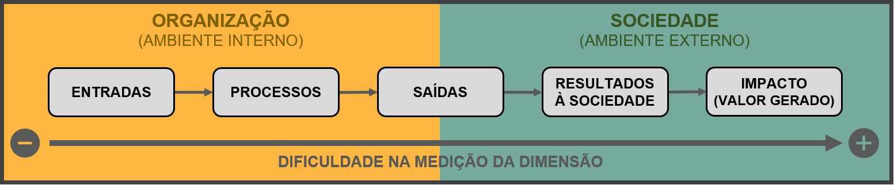
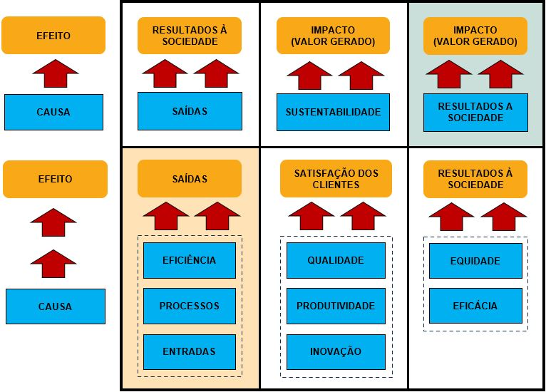

7 Classificação dos indicadores
Esta subseção dispõe da tipologia dos indicadores, classificando-os em grupos comuns e apresenta os benefícios dessa forma de organização.
Os indicadores podem ser classificados pelo nível de informação gerada, pelas dimensões de medição de desempenho com as quais se alinham, pela sua especificidade etc. Esta subseção apresenta as tipologias de indicadores mais comuns e a utilidade de sua consideração.
7.1 Níveis organizacionais
Dentre os níveis hierárquicos organizacional, pode-se prever indicadores operacionais, gerenciais e estratégicos (Uchoa, 2013; Paladini, 2019; ENAP, 2021c). A utilidade e importância de se dispor de indicadores e resultados conforme as necessidades dos usuários dessas medições (Grøn; Kristiansen, 2022) foram demonstradas na Seção 2.
No caso das instituições que possuem subunidades organizacionais independentes, seus objetivos secundários também devem ser avaliados e medidos (Neely; Kennerley; Adams, 2007; Lundberg; Balfors; Folkeson, 2009). Apesar dessa importante demonstração, esta classificação pode gerar melhores resultados se complementada e integrada com as apresentadas a seguir.
7.2 Dimensões de medição
As dimensões de medição de desempenho (Seção 4) também podem ser utilizadas como critérios para classificação e organização dos indicadores. Assim, indicadores de qualidade envolvem as dimensões qualidade e satisfação dos clientes (Toledo et al., 2012; Paladini, 2019); para Berczi (1978) indicadores de produtividade envolvem as dimensões eficiência e eficácia; já os indicadores financeiros abrangem a respectiva dimensão, e os indicadores não-financeiros abrangem as demais (Camillis et al., 2018). Considerar os indicadores por tipo de dimensão permite sua melhor organização com a formação de grupos de dimensões.
7.3 Posicionamento na cadeia produtiva
Primeiramente esta também é uma forma de classificação conforme a dimensão de medição: neste caso trata-se das dimensões envolvidas na cadeia de valor ou cadeia produtiva. As dimensões desse processo estão apresentadas na figura abaixo:

Para Maranhão (2023), nesta forma de classificação têm-se os seguintes tipos de indicadores:
indicadores de processo: medem as atividades e ações executadas internamente pelos órgãos públicos para geração de produtos e resultados;
indicadores de produto: tratam de fenômenos que ocorrem a curto prazo, visto que medem a entrega imediata de produtos e serviços advindos de processos;
indicadores de resultado: mensuram fenômenos que são alterados a curto e médio prazo, pois são resultantes da intervenção rápida e direta em uma realidade social;
indicadores de impacto: medem um conjunto de fenômenos que são alterados apenas a longo prazo, pois tratam de alterações profundas na realidade social, que necessitam de certo tempo para se sedimentar.
A utilidade em classificar os indicadores por esta forma está na organização entre aqueles de ambiente interno consequentemente, de mais fácil controle e menor prazo de medição, e os indicadores de ambiente externo,cuja complexidade da gestão e controle aumentam conforme se avança até a dimensão impacto, assim como, o período de tempo para a geração dos resultados.
Em condições ideais, é senso comum prever que na cadeia produtiva um aumento na quantidade de insumos elevará a quantidade de saídas (produtos ou serviços); que processos mais eficientes aumentarão a quantidade de saídas, mantendo-se a quantidade de insumos; ou ainda, que processos mais eficazes elevarão os resultados gerados à sociedade com a mesma quantidade de saídas produzidas etc. Essa relação de causa e efeito entre as dimensões é uma das maiores vantagem dos SMD e será apresentada pela última e mais importante tipologia de classificação.
7.4 Especificidade
As dimensões de medição de desempenho devem ser empregadas em sinergia, de forma que o resultado de uma dimensão possa contribuir com o de outra. Na classificação pela especificidade da função, os indicadores também operam em conjunto numa relação de causa e efeito, sendo classificados em indicadores de esforço (ou drivers) associados a insumos e processos de trabalho e indicadores de resultado (ou outcomes) relativos às saídas produzidas e seus resultados (Chua; Goh, 2008; Fryer; Antony; Ogden, 2009; Parmenter, 2010; Uchoa, 2013; Bahia, 2021; ENAP, 2021c). Importa frisar que para cada indicador de resultado deve existir ao menos um indicador de esforço atrelado, devendo, ainda, existir uma relação de causa e efeito entre eles (Brasil, 2011; Siti-Nabiha; Fuad, 2011; Uchoa, 2013; Bahia, 2021; ENAP, 2021c).
A vantagem da relação de causalidade entre as dimensões foi exemplificada anteriormente, entre as dimensões da cadeia de valor; ao ser aplicada no todo e na construção dos indicadores, é de fato a mais importante forma de classificação dos indicadores por gerar os maiores benefícios para um SMD.
Indicadores de resultado refletem a objetividade de um SMD e indicadores de esforço demonstram o acompanhamento dos meios, empenhos e processos necessários para o alcance dos resultados.
Estabelecida a relação de causa (por meio dos indicadores de esforço) e efeito (conforme os indicadores de resultado), com a apresentação dos resultados de um SMD pode-se:
identificar os indicadores de esforço que contribuíram para o alcance do resultado (tiveram evolução similar, acompanhando o indicador de resultado);
detectar aqueles indicadores de esforço que não tiveram participação no resultado, uma vez que não tiveram a mesma variação e evolução desse.
A divisão entre indicadores de esforço e de resultado é uma condição para um Sistema de Medição de Desempenho balanceado (De Bruijn, 2002; ENAP, 2021c).
A figura seguinte apresenta possíveis relações de causa e efeito por meio das dimensões de medição de desempenho, que podem ser pontos de partida para possíveis indicadores.

Na figura acima, as dimensões relacionadas no quadro com fundo laranja (canto inferior esquerdo) tratam de perspectivas internas às organizações, sendo de mais fácil medição; aquelas em fundo verde (canto superior direito) referem-se a temas externos e de medição mais difícil.
Por fim, alerta-se: confiança excessiva, representação limitada da realidade e substituição precoce são exemplos de significativas limitações dos indicadores apresentadas na Subseção 1.5 e aplicáveis nessa forma de classificação; dessa forma, reforça-se:
Nem sempre a relação de causa e efeito projetada para os indicadores de um SMD é de simples constatação e, ainda que não detectada, não deve ser facilmente descartada.
Como exemplo de aplicação, em organizações com departamentos, setores, gerências e demais descentralizações, ENAP (2021d) sugere priorizar os indicadores de resultados em todos os níveis organizacionais, especialmente nos níveis hierárquicos mais elevados, o que não implica empregar somente indicadores de esforço nos níveis operacionais, mas, que os indicadores de resultado, embora não sejam exclusivos, são prioritários (Liu et al., 2010; ENAP, 2021d).
Em outra proposta Teh e Pang (1999) sugerem a formulação dos indicadores estratégicos conforme as missões ou os objetivos estratégicos da instituição, sob a ótica da dimensão partes interessadas (clientes, servidores e pelo governo), para que os indicadores representem o equilíbrio dos interesses dessas partes. Já os indicadores táticos e operacionais devem ser desdobrados do cruzamento das atividades de cadeia de valor (entradas, processos, saídas e resultados) com outras dimensões como: satisfação dos clientes, qualidade, produtividade, eficiência, eficácia e inovação (Teh; Pang, 1999).
Nesta seção constatou-se que a classificação dos indicadores em tipos é mais do que uma forma didática de agrupá-los: há vantagens próprias de cada forma de classificação. Assim:
indicadores classificados em função do nível hierárquico organizacional permitem direcionar seus resultados conforme as necessidades dos usuários dessas medições;
a classificação dos indicadores conforme as dimensões de medição proporciona o agrupamento dessas em áreas afins, permitindo melhor organização e gestão;
indicadores categorizados segundo sua posição na cadeia produtiva (uma forma particular de classificação segundo as dimensões de medição) proporcionam melhor controle, em função da posição do indicador (interna ou externa) ao longo da cadeia;
já a divisão dos indicadores entre aqueles de esforço e os de resultado proporciona o melhor benefício aos SMD em função da relação de causa e efeito entre eles, potencializando o seu emprego e proporcionando um SMD balanceado;
as tipologias de classificação citadas também permitem uma mescla entre si, visando o melhor aproveitamento e gestão desses indicadores.
Na subseção seguinte serão apresentadas as características individuais que os indicadores precisam possuir para compor os SMD e retornar os resultados esperados.